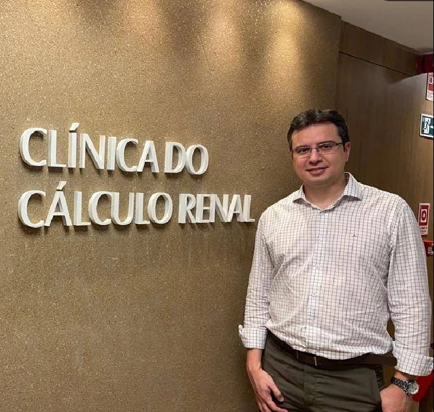

Câncer urológico
Próstata, rim e bexiga.
Urologia · Belém
Urologista especialista em uro-oncologia e cirurgia robótica. Atendimento na Clínica do Cálculo Renal e cirurgias no Hospital Porto Dias e no Hospital Beneficente Portuguesa.

Sobre
Graduado em medicina pela Universidade do Estado do Pará (2000–2005), realizou residência em cirurgia geral e urologia na Santa Casa de São Paulo (2006–2012). Membro titular da Sociedade Brasileira de Urologia (TiSBU, 2012).
Mestre (2012–2016) e doutorando (2016–atual) em Oncologia e Ciências Médicas pela UFPA. Professor de urologia do curso de medicina da Universidade do Estado do Pará e preceptor da residência de urologia do Hospital das Clínicas Gaspar Viana.
Coordenador da Liga Acadêmica de Urologia do Pará e presidente da Sociedade Brasileira de Urologia, seção Pará (2022–2023). Sócio fundador da Clínica do Cálculo Renal e membro do corpo clínico do Hospital Porto Dias e do Hospital Beneficente Portuguesa.

Formação
Graduação em Medicina, Universidade do Estado do Pará
Residência em Cirurgia Geral, Santa Casa de São Paulo
Residência em Urologia, Santa Casa de São Paulo
Mestrado em Oncologia e Ciências Médicas, UFPA
Doutorado em Oncologia e Ciências Médicas, UFPA

Tratamentos
Próstata, rim e bexiga.
Litíase urinária.
Hiperplasia prostática benigna.
Impotência.
Avaliação e tratamento.
Tratamento cirúrgico e clínico.
Planejamento familiar.
Cirurgias com sistema da Vinci.

Contato